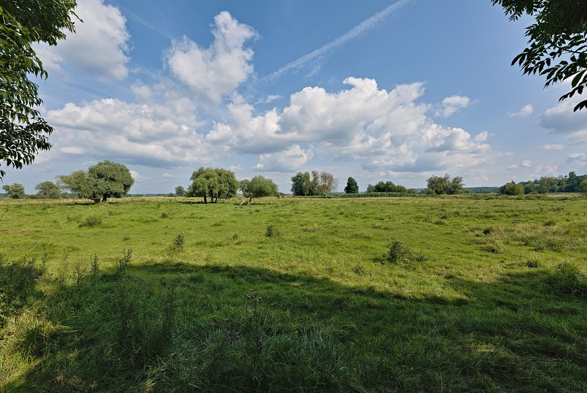

ABOUT
お店の想い
2024年4月、富山市岩木新に開店したカフェです。取材記事では、小さなお子さん連れの家族にも気軽に来てほしいという想いが紹介されており、離乳食(既製品)の無料提供やキッズチェアの用意、店の外のアスレチックなどが伝えられています。
コンセプトは「家族みんなで楽しめる場所」。飲食をしなくても、ふらっと立ち寄れる場所を目指しているとのことです。
鹿肉などのジビエや県産食材を使った手打ちパスタ、自家焙煎コーヒーが特徴として紹介されています。敷地内にはBBQコーナーもあると伝えられています。
店名「base」の意味は確認できていません。このページでは、制作側のイメージとして「家族の拠点・基地」と読み取り、デザインに反映しています。

MENU
メニュー
内容は取材記事の掲載時点のもので、季節により変わるとされています。価格・営業時間・定休日などの詳細は準備中です。電話番号も準備中です。


VOICE
口コミ(イメージ例)
以下は制作側が作成したイメージ例で、実際のお客様の声ではありません。
イメージ例
子どもを連れていても周りを気にせず過ごせました。外で少し遊べるのもありがたいです。
イメージ例
手打ちのパスタがもちもちで、食後のコーヒーの香りも良かったです。
イメージ例
緑に囲まれた景色のなかで、のんびりひと息つけるお店です。
GALLERY
イメージ写真
フリー素材のイメージです。実際の店内・料理・周辺の様子ではありません。
